STARRYMATE / FIND YOUR MATE
這一場，快速找到
適合一起出發的搭子
從同藝人、同場次開始，先看演出與旅行日期，再比較出發地、住宿預算、招募條件與追星屬性。 少一點海撈與反覆私訊，把時間留給真正可能一起出發的人。
讓每一場奔赴，都有同頻相伴
體驗 Prototype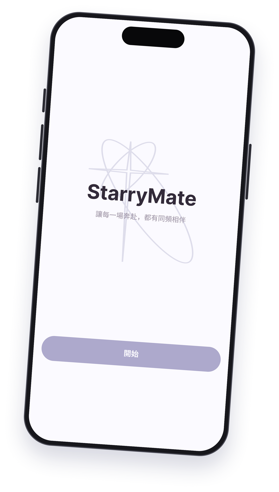
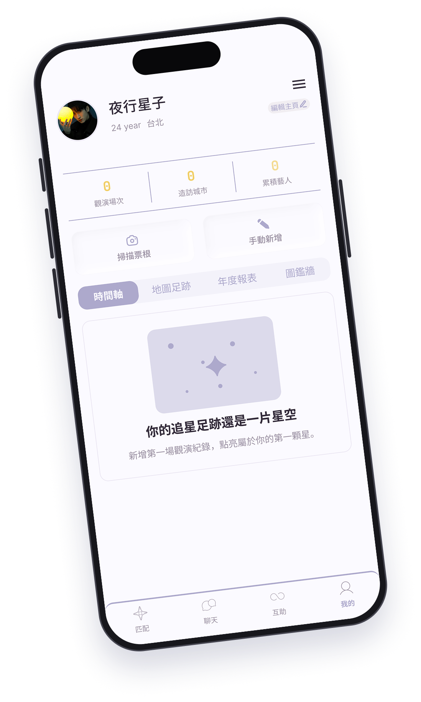
01 / STRUCTURED PARTNER CARD
把找搭子，變成一條清楚的發卡流程
從場次、同行條件到追星偏好，三個步驟填完後先預覽，再正式發布招募。
01 基本場次
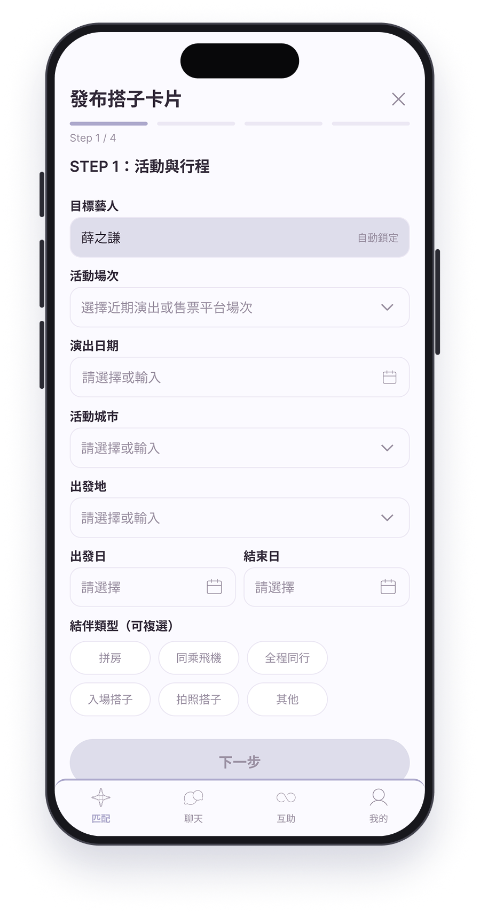
選定藝人、城市與日期
02 同行條件
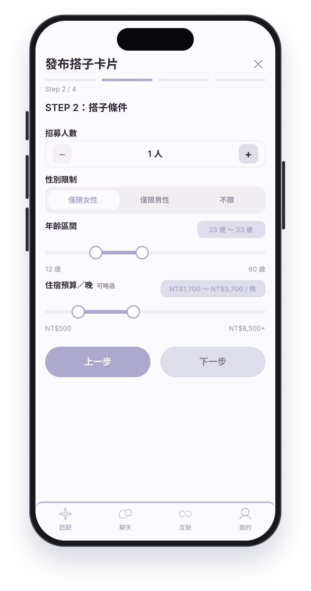
設定人數、住宿與旅行需求
03 追星偏好
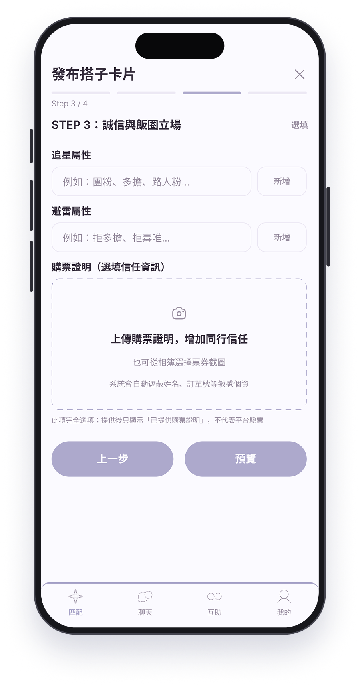
補上飯圈與避雷屬性
04 預覽發布
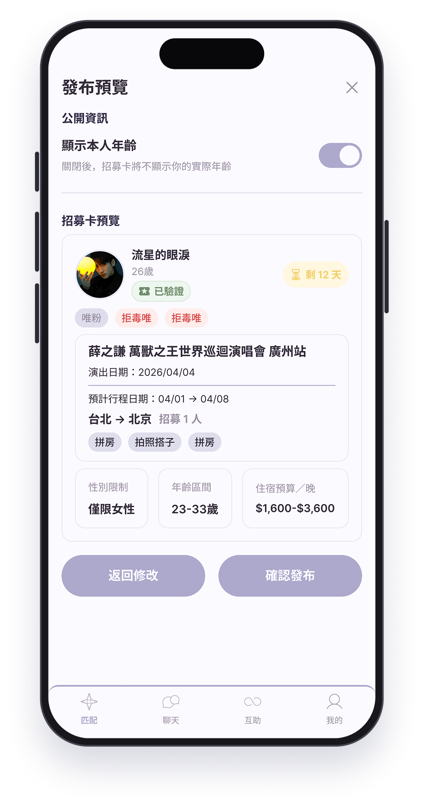
確認完整內容後再發布
02 / MATCH FASTER
一張 Partner Card，
先看懂誰真的比較適合
瀏覽招募時，不用再把同樣的問題重問一次。 出發地、住宿預算、招募條件、追星屬性與信任資訊都在同一個畫面先比較。
同場先對上
城市、日期與旅行時間
習慣先看
飯圈屬性與避雷資訊
條件先比較
預算、招募與同行需求
再決定行動
收藏或表達同行意願
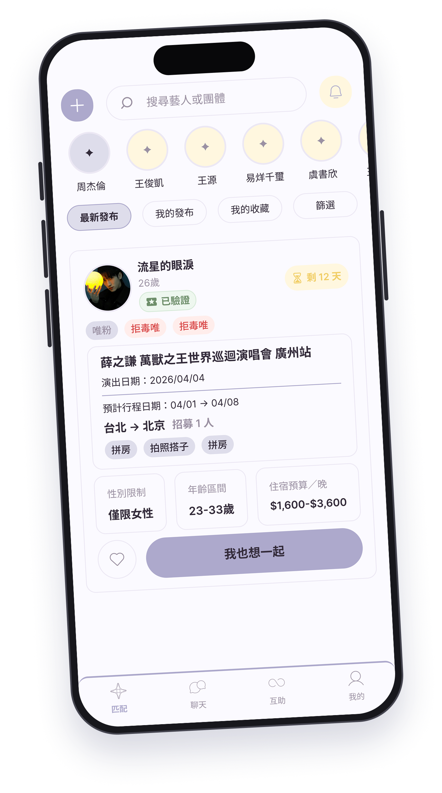
03 / INTENT → SAFE CHAT
先確認彼此意願
配對成功後，再安心溝通
用意願卡表達想同行的意願；雙方接受後，再進入星安溝通室確認重要同行細節。
意願卡
先表達想同行
配對成功
雙方接受後建立配對
星安溝通
再把同行細節聊清楚
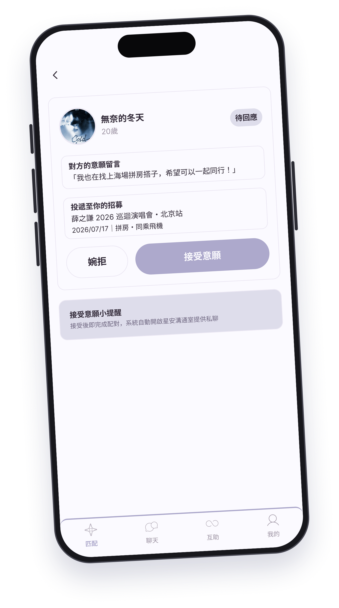
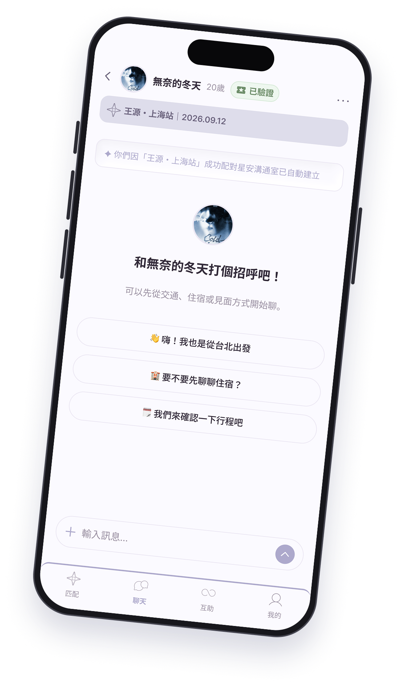
04 / SAME EVENT SUPPORT
不只找同行，
也讓同場的人彼此連上
星援互助廳整合同場群與互助牆：同場群交流演唱會資訊與經驗，互助牆提供無償搶票互助。
同場群
場館、路線、應援、資訊
互助牆
無償搶票互助
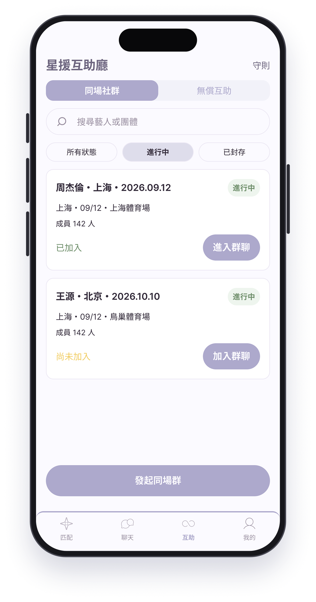
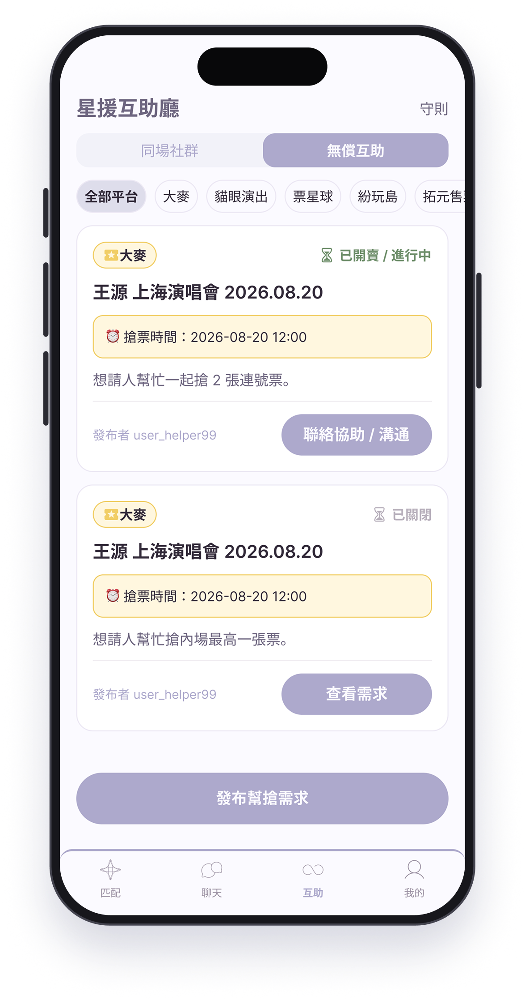
05 / KEEP THE MEMORY
這一場結束了，
奔赴過的地方還會留下來
把票根、照片、心得與觀演足跡收進星跡檔案館，讓一次次追星不只停在手機相簿裡， 而是成為可以回看的個人旅程。
觀演足跡
回看去過的場次與城市
票根與照片
把散落內容集中留下
旅程記憶
讓每一次奔赴都有完整收尾
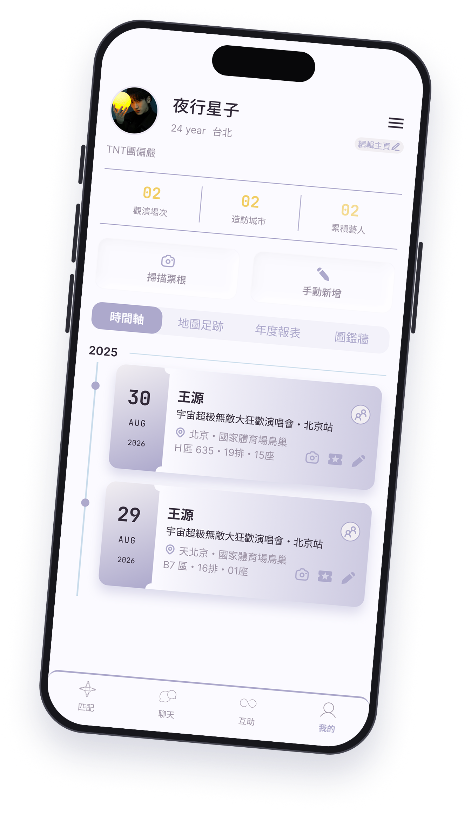
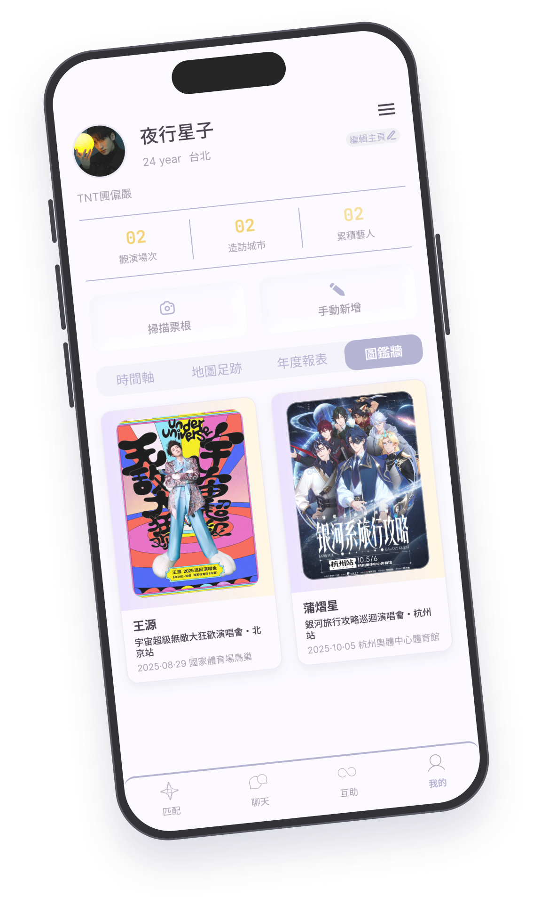
STARRYMATE
下一場，不用再一個人
慢慢找搭子
從場次開始，先找到同場的人，再找到真正適合一起出發的人。
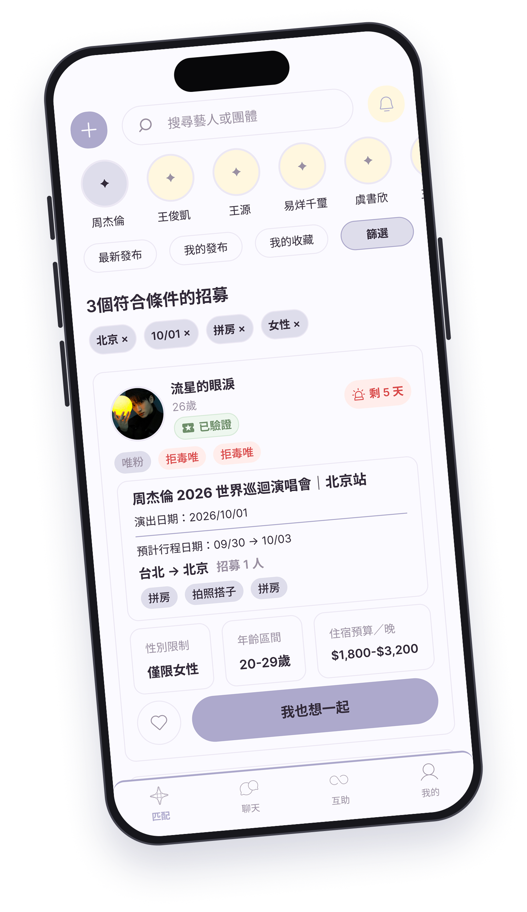